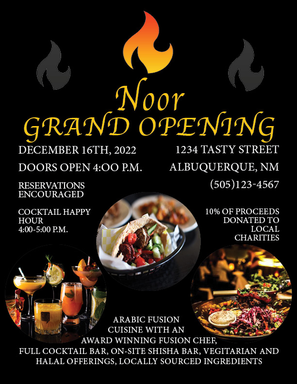
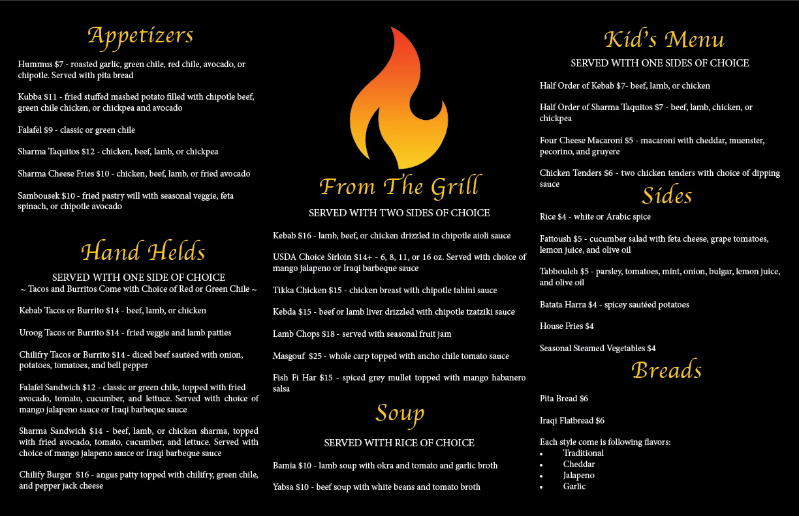
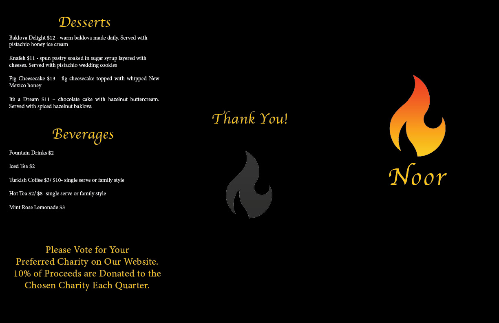

I worked on some great projects this semester in my Web Design class and Design class. I am including some works from my Design Class. Students had to create a restaurant brand over the course of the semester and create a business card, flyer, and menu. These were really fun projects as I have always wanted to have my own restaurant. The brand has been in my imagination for many years and this was a great opportunity to put my imagination into practice. I have not been great with technology in the past, but these two courses helped me learn how to navigate complication programs and gave me the confidence to take on any task via technology. My business card has both front and back images as well as the menu. The menu was designed to be a threefold document, so I kept that in mind when designing the back side. The brand of this restaurant is Arabic Fusion with strong ties into the community. 10% of quarterly proceeds go into a voted charity and staff are paid livable wages instead of relying on tips for survival. The name of the restaurant is Noor which means light in Arabic and symbolizes for my love of providing food for people to enjoy. Tons of work and thought has been put into this project especially the menu items. All documents were created in InDesign. I hope you enjoy these projects as much as I did! Thank you for taking the time to review my portfolio.




